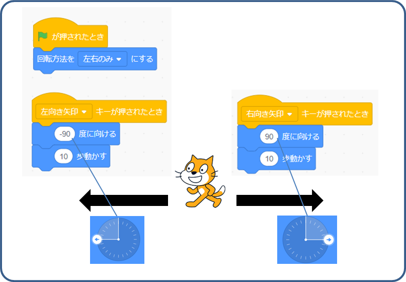
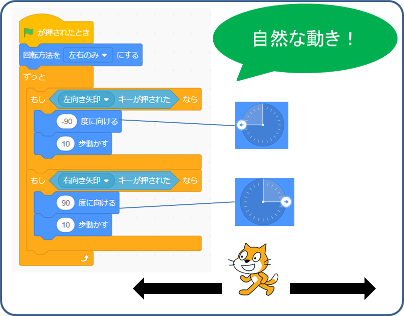

スプライトが左右に移動するとき、上下さかさまにならないように［回転方向を左右のみにする］。
［左キー］が押されたとき、左方向に動かします。［右キー］が押されたら？

「ツ・ツーーー」って感じ？キーボードで文字を入力するとき、キー１回で１文字だけ入力できるように２回目の入力検知が遅くなっています。 最初から「ツーーー」っとスムーズに移動する方法を紹介します
［もしも、＜左キーが押された＞なら］、左方向に動かします。［右キー］が押されたら？
